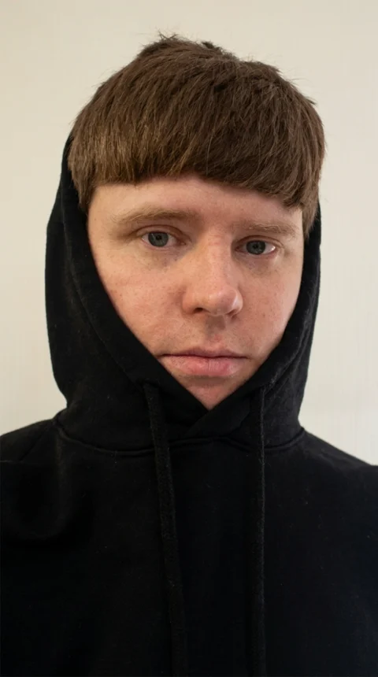

Contact

I previously worked under the name St Laurent Jr (stlaurentjr). I was a member of the Berezovy Prompt art group, which has since ceased its activities.

I previously worked under the name St Laurent Jr (stlaurentjr). I was a member of the Berezovy Prompt art group, which has since ceased its activities.